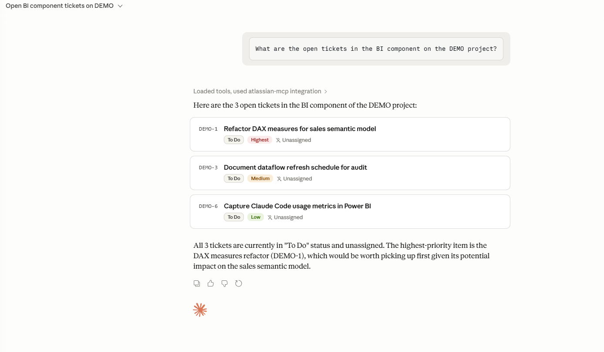

Approach & Core Responsibilities
Using Claude Code as the primary AI coding environment for end-to-end workflow design — from generating and refactoring code to running tests and raising merge requests via standardised slash-command workflows. Atlassian and Glean MCP servers provide live context from Atlassian Jira, Confluence, SharePoint, Teams, and GitLab directly inside each coding session.
Selected Projects
1. Automating BI & Enterprise Solutions workflows
Claude Code · Microsoft Power BI · Power Automate
Objective: double team capacity on BI and platform tasks by offloading repetitive work to an AI coding assistant.
- Used Claude Code to build and update Microsoft Power BI dataflows, Power Automate jobs, and related scripts — new reports stood up with significantly less manual effort.
- Automated Atlassian Jira/JSM configuration and ticket hygiene — field changes, scheme updates — keeping Atlassian aligned with product and reporting needs without backlog accumulation.
2. Claude usage analytics
Microsoft Power BI · AI Governance · Claude Code
Objective: give Platform leadership clear visibility into Claude Code adoption across engineering teams.
- Co-developed the Dataflow – Platform – Claude Usage Microsoft Power BI dataflow and report, pulling usage data into a standardised model integrated into the Enterprise DataFlows audit suite.
- Documented data sources, workspace, and refresh schedule in Confluence to support AI governance reporting.
3. AI-assisted Atlassian workflows via Claude Code + MCP
Claude Code · Atlassian MCP · Atlassian Jira · Confluence
Objective: use Claude Code as an agent over Atlassian to keep code, tickets, and documentation in sync automatically.
- Configured Atlassian MCP servers to enable Claude to read/update Atlassian Jira tickets — comments, status transitions, MR links — and edit Confluence pages directly from the CLI.
- Applied to Enterprise Solutions work: JSM tickets, Atlassian Jira config changes, and documentation updates all tied into a single agentic workflow.
4. atlassian-mcp — public Python MCP server
Python · FastMCP · Open Source · GitHub
Objective: open-source a production-grade Python MCP server demonstrating the agentic Atlassian pattern delivered at InvestCloud.
- Designed and built a read-only Python MCP server exposing curated JQL primitives for Atlassian Jira access via Claude — backend service architecture with FastMCP + httpx + python-dotenv.
- Documented architecture, README, demo screenshot, and explicit "not in scope" framing — public artefact at github.com/Toby-Rogers/atlassian-mcp demonstrating senior engineering practice.

# Example: a curated JQL primitive exposed as an MCP tool via FastMCP from fastmcp import FastMCP import httpx import os mcp = FastMCP("atlassian-mcp") @mcp.tool() def list_open_tickets_by_component(component: str, limit: int = 10) -> dict: """List open Atlassian Jira issues for a given component via JQL.""" jql = f'component = "{component}" AND statusCategory != Done' response = httpx.get( f"{os.environ['JIRA_URL']}/rest/api/3/search", params={"jql": jql, "maxResults": limit}, auth=(os.environ['JIRA_USER'], os.environ['JIRA_TOKEN']), ) return response.json()
5. Claude Code Community of Practice & standardisation
AI Enablement · Platform · CoP
- Participated in the Platform Claude Code Kickoff and ongoing practices sessions, sharing real Enterprise Solutions scenarios — Microsoft Power BI automation, JSM workflows, Atlassian admin tasks.
- Contributions ensure the shared claude-setup framework and skills library reflect actual cross-team production use cases, not just engineering workflows.
6. Glean-driven AI enablement & enterprise context
Glean · Enterprise AI · Cross-system research
- Use Glean daily to pull together Atlassian Jira, Confluence, SharePoint, Teams, and Outlook context into a single view when scoping automations or troubleshooting.
- BI reports and agentic workflows aligned with the Glean Training & Adoption programme and InvestCloud's broader Enterprise AI strategy.